操作系统原理 · 第 8 章 设备管理
8.2 缓冲技术
设备与 CPU 的速度差着好几个数量级，这是 8.1 节列出的头一条设备特性。缓冲技术就是抹平这条速度鸿沟的基本手段。这一节按「是什么—怎么用—为什么—有哪些—UNIX 怎么做」的顺序展开：先给出缓冲的概念与两种形态，再用读、写两个方向看清缓冲如何参与一次 I/O；接着解释引入缓冲的四条理由；然后依次介绍双缓冲、环形缓冲；最后落到 UNIX 系统用缓冲池管理磁盘数据的具体做法，包括缓冲首部、两条队列以及 getblk/brelse 两个核心操作。
1. 缓冲的概念
（1）什么是缓冲
缓冲是两种不同速度的设备之间传输信息时，平滑传输过程的常用手段。慢的一方把数据先放进一块中间存储区，快的一方从这块存储区取走，双方就不必互相等死。
（2）缓冲的两种形态
- 缓冲器（硬件方式）：用来暂时存放数据的一种存储装置，它容量较小、存取速度快。
- 软件缓冲：在 I/O 操作期间用来临时存放 I/O 数据的一块存储区域。
本节讲的主要是软件缓冲，也就是由操作系统在主存里安排、由设备管理程序管理的那块区域。
2. 用缓冲完成一次输入/输出
（1）读操作：把物理记录变成逻辑记录
进程请求从输入设备读数据时，数据并不是直接从设备进到用户进程的存储区，中间要经过缓冲区。过程如下：
- ① 用户要求在某个设备上进行读操作时，首先从系统中获得一个空的缓冲区；
- ② 将一个物理记录送到缓冲区中；
- ③ 当用户请求这些数据时，系统依据逻辑记录特性从缓冲区中提取并发送到用户进程存储区中；
- ④ 当缓冲区空而进程又要从中取用数据时，该进程被迫等待。此时操作系统需要重新送数据填满缓冲区，进程才能从中取数据继续运行。
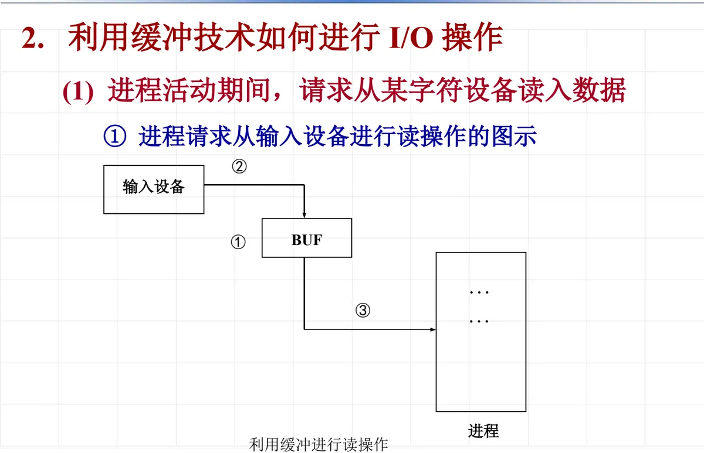
这里的关键是操作②与操作③的同步关系：缓冲区没填满，用户取不到数据；用户没取走，缓冲区腾不出空。设备与进程就是靠这一对互相制约的动作配合起来的。
（2）写操作
进程请求从输出设备输出数据时，方向相反，但同样是「先入缓冲区、再送设备」：
- ① 用户要求进行写操作时，首先从系统中获得一个空的缓冲区；
- ② 将一个逻辑记录从进程存储区传送到缓冲区中；
- ③ 当缓冲区写满时，系统将缓冲区的内容作为物理记录文件写到设备上，使缓冲区再次为空；
- ④ 只有在系统还来不及腾空缓冲区之前，进程又企图输出信息时，它才需要等待。
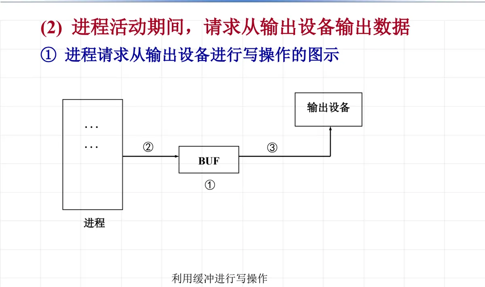
对比读、写两个方向可以看到：读操作是「设备往里送、进程往外取」，写操作是「进程往里送、设备往外取」。缓冲区的角色就是一个交接点，把两侧的速度差吸收掉。
3. 为什么要引入缓冲
归纳起来，引入缓冲有四条理由。
- 平滑传输，解决数据流的生产者与消费者之间的速度差异。例如从网络收到一个文件并保存到硬盘上：慢速调制解调器与高速网卡并存时，两侧的收发节奏并不匹配。
- 协调传输数据大小不一致的设备。例如在计算机网络中用来处理消息的分段和重组——上层要发的是一个整块，下层一次只能传一个小片。
- 用于数据中间拷贝的缓存，保证应用程序的拷贝语义。操作系统要保证 write 系统调用的正确语义：应用程序要写入磁盘的数据，就是 write 系统调用发生时的那份数据。做法是在系统调用返回前，把应用程序缓冲区的内容复制到内核缓冲区——这样即使应用程序随后立刻修改了自己的缓冲区，写到磁盘上的仍是调用时的那份。
- 提高并行程度，提高效率。有了缓冲区，设备在填/取缓冲区的同时，CPU 可以去干别的活。
缓冲把「生产者」和「消费者」耦合在一起，所以自然就会出现多个进程共享缓冲区、需要同步的问题。课件给出过这样一组合作进程：
- get 进程负责不断地把输入记录送入缓冲区 s；
- copy 进程负责从缓冲区 s 中取出记录，拷贝到缓冲区 t；
- put 进程负责把记录从缓冲区 t 中取出打印。
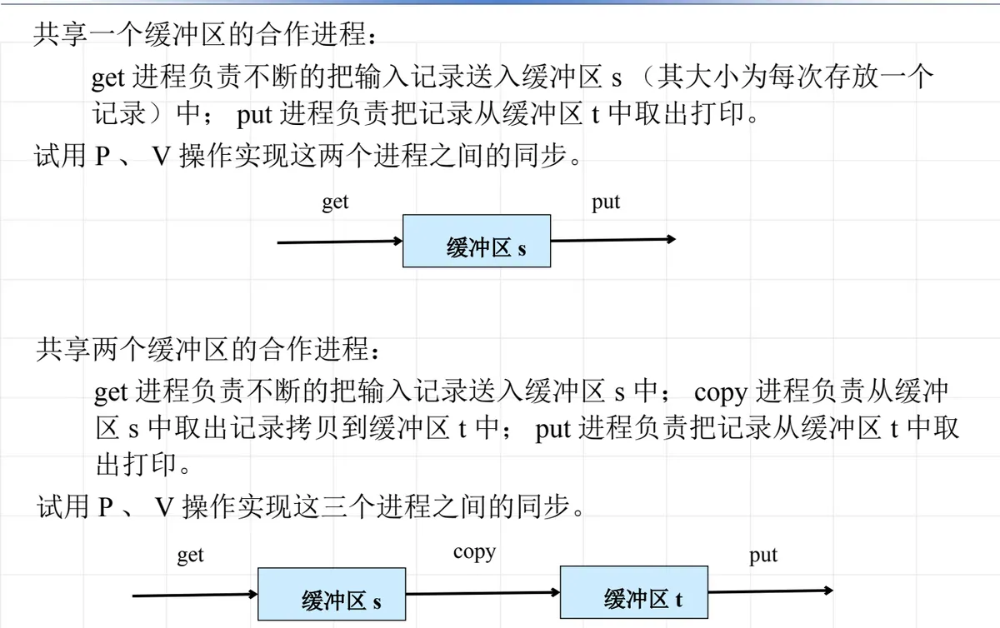
课件在这里提出的问题是：试用 P、V 操作实现这三个进程之间的同步——这正是第 4 章 4.5 节进程同步机构与 4.6 节进程互斥与同步的实现的直接应用：get 与 copy 之间要有「s 非空 / s 非满」两个信号量，copy 与 put 之间要有「t 非空 / t 非满」两个信号量。
4. 双缓冲
（1）双缓冲的用法
在双缓冲方案下，为输入或输出分配两个缓冲区 buf1、buf2。这两个缓冲可以有三种用法：
- 两个缓冲都用于输入数据；
- 两个缓冲都用于输出数据；
- 两个缓冲既用于输入、又用于输出数据。
道理很直观：当一个缓冲区正在被设备填（或取）的时候，另一个缓冲区可以同时被进程取（或填），设备与 CPU 因此能够并行工作。
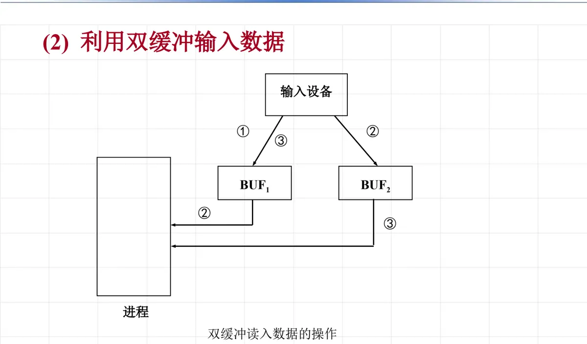
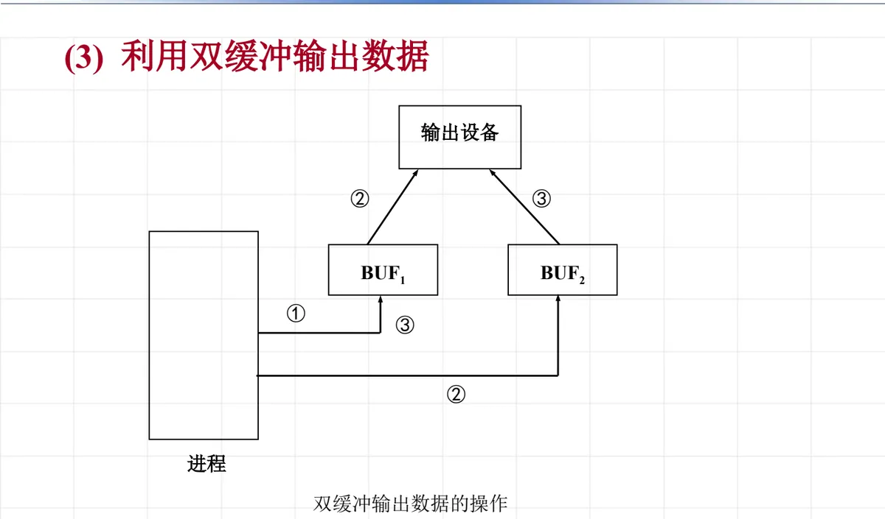
（2）双缓冲同时用于输入和输出
两个缓冲区还可以一个服务于输入设备、一个服务于输出设备，让输入和输出同时进行。
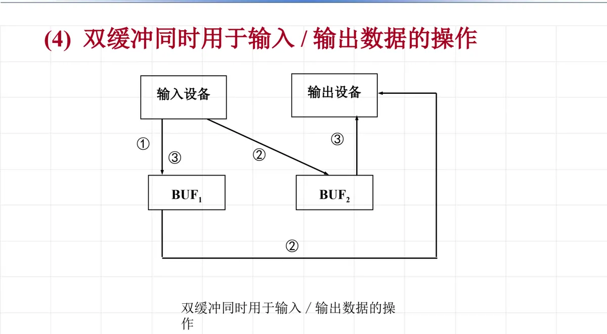
5. 环形缓冲
双缓冲只解决了「一边装、一边取」的两步并行。如果 CPU 与外设对信息的操作速度相差甚远，两个缓冲轮换仍然可能被填满或取空，于是把缓冲区的数量再增加，并把它们首尾相接地链接起来：在系统中设置若干缓冲区并把这些缓冲区链接起来，这样若干个缓冲区就形成了一个环，故称环形缓冲区。
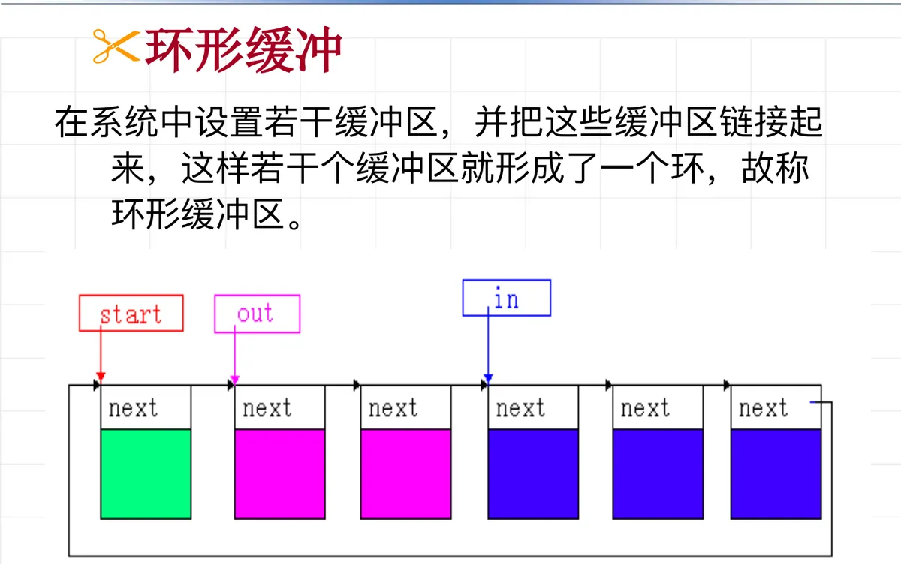
（1）三个指针：start、in、out
环形缓冲技术的使用，靠一个输入指针 in、一个输出指针 out 和一个缓冲区的开始指针 start：系统初始时 start = in = out。
- 输入时，要判断 in 的下一个是否与 out 相等，若相等，则要等待（环满了）；否则把信息送入 in 指向的缓冲区，填满后把 in 的下一个缓冲区置为 in，如此类推。
- 输出时，首先判断 out = in，若相等则等待（意味着系统中没有数据可取）；否则取出缓冲区中的信息，将 out 的下一个缓冲区置为 out。
也就是说，in 指向第一个空缓冲区，out 指向第一个装满数据的缓冲区；in 追上 out 说明环满，out 追上 in 说明环空——这正是 8.1 节所说的「缓冲是设备与进程之间的交接点」在数量上的推广。
（2）一个生产者、一个消费者的实现
课件给出了一个生产者、一个消费者共用环形缓冲区的程序骨架（N 个缓冲区，信号量 S1 表示空缓冲区数、S2 表示满缓冲区数）：
环形缓冲区 start，in = out = 0; S1 = N; S2 = 0;
producer()
while (没有结束) {
P(S1);
放入数据 --> start[in];
if (++in == N) in = 0;
V(S2);
}
consumer()
while (没有结束) {
P(S2);
取出数据 <-- start[out];
if (++out == N) out = 0;
V(S1);
}课件紧接着问了一句：什么情况下需要互斥锁？答案是当生产者和消费者多于一个（或者 in、out 指针的更新与其他操作不能被割裂）时，对缓冲区与指针的访问必须互斥——这和第 4 章讨论的「同步与互斥是两件事」是同一个道理。
6. UNIX 系统的缓冲区管理（缓冲池）
（1）目的与思路
磁盘的传输速率比内存慢得多，UNIX 为此在主存中保留一批缓冲区，构成缓冲池。管理它的目的是：
- 加快系统响应、增强系统吞吐量；
- 减少对磁盘的 I/O 操作次数。
思路是尽可能多地利用保存在缓冲中的数据，具体做法有两条：
- 预先缓存：当进程需要从磁盘读数据时，核心首先看数据是否已经在高速缓冲中，如果在就不必启动磁盘 I/O，直接从高速缓冲中读。
- 延迟发送：当进程需要往磁盘上写数据时，也先往高速缓冲中写，以便随后又试图读取它。
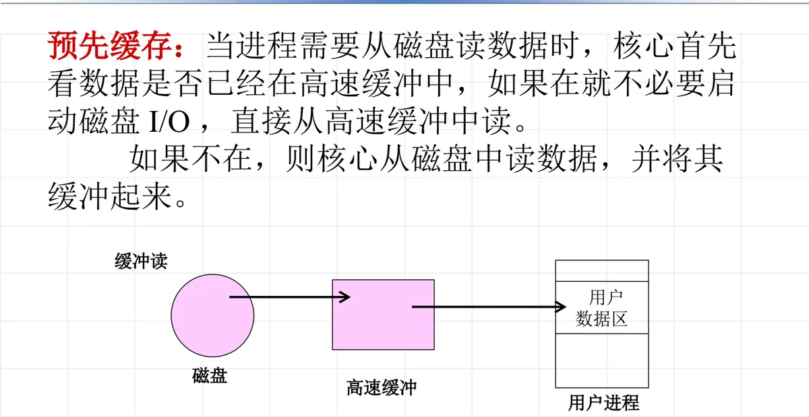
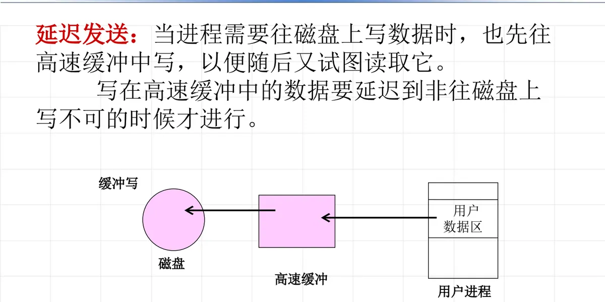
（2）缓冲区的组成与缓冲首部
一个缓冲区由两部分组成：
- 缓冲数组——含有磁盘上的数据；
- 缓冲首部——管理和描述缓冲区的数据结构。
缓冲首部与缓冲数组中的一个成员是一一对应关系，两者统称为一个缓冲区；一个缓冲区的数据与辅存上一个磁盘块中的数据对应。缓冲首部里记录了这块缓冲区当前属于谁、处于什么状态：
| 字段 | 含义 |
|---|---|
| 设备号 dev | 缓冲区所包含的信息所属设备的设备号 |
| 块号 blkno | 该设备上的块号 |
| 状态 flag | 描述缓冲区当前的状态，由下面若干标志位组成 |
状态 flag 由这些标志位组成：
- 忙标志 BUSY：缓冲区当前正「忙」；
- 有效位 AVE：缓冲区包含的数据有效；
- 延迟写 DELWR：核心在某缓冲区重新分配出去之前，必须把缓冲区内容写到磁盘上；
- 写标志 WRITE：核心当前正把缓冲区的内容写到磁盘；
- 读标志 READ：核心当前正从磁盘往缓冲区写信息；
- 等待位 WAIT：一个进程当前正在等候该缓冲区变为空闲。
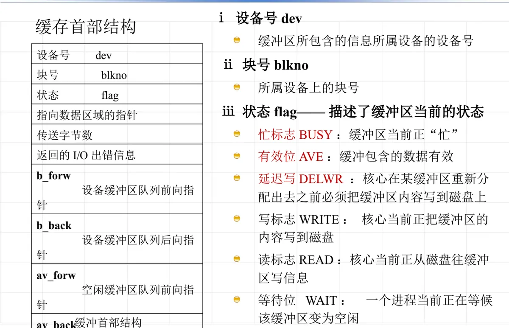
（3）两条队列：av 链与 b 链
缓冲区由队列串起来管理，而且同时挂在两条队列上：
- 用
av_forw、av_back把空闲缓冲区串成空闲缓冲区队列（av 链）； - 用
b_forw、b_back把同一个设备上的缓冲区串成设备缓冲区队列（b 链）。
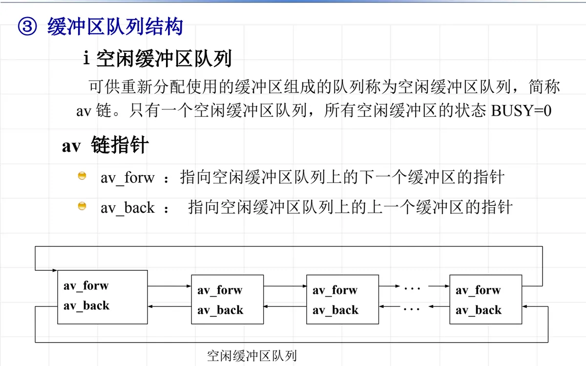
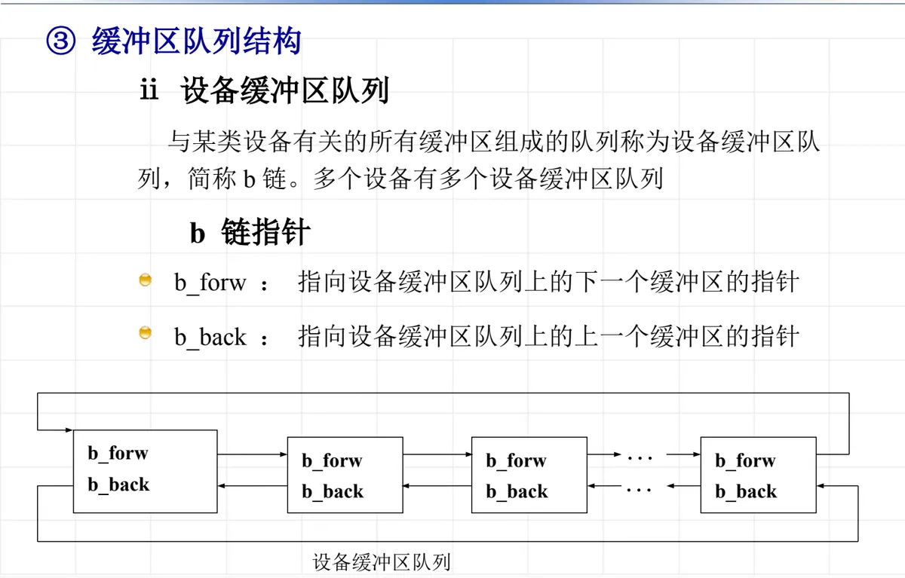
UNIX 的缓冲管理算法可以分三种情形来看：
- 一个缓冲区被分配用于读/写某设备上的块时：置 BUSY = 1，进入该设备的缓冲区队列（b 链），不在空闲缓冲区队列（av 链）。用户读/写缓冲区结束时，置 BUSY = 0，并把它送入空闲缓冲区队尾（若是写缓冲区，还要设置 DELWR = 1）。这时缓冲区仍留在 b 链上——该缓冲区在两个队列同时存在，使缓冲区能充分得到利用：一方面，空闲缓冲区队列中的缓冲只要没有被重新分配，就保持其内容不变；另一方面，重新分配空闲缓冲区需要从两个队列中同时移出，再送入新的设备缓冲区队列，从而实现多进程对有限缓冲的共享利用。
- 需要一个空闲缓冲区时：取空闲缓冲区的首元素；而一个被使用过的缓冲区释放时放在队尾，一个装有有效数据的缓冲区会向空闲缓冲区队列的头部移动——所以空闲缓冲区队列的首元素是最久未使用的，这就实现了精确的最久未使用淘汰算法（LRU，Least Recently Used）。
- 一个标有延迟写的缓冲区移到空闲队列头时：不能立即对它重新分配，而是提出 I/O 请求，将内容写到对应设备的指定磁盘块上；它将从空闲队列中移出，但留在设备缓冲区队列，写操作完成后再进入空闲队列头，并仍留在设备缓冲区队列。
（4）两个核心操作：getblk 与 brelse
获取缓冲区 getblk(设备号, 块号) 返回一个已标识为忙的缓冲区，找不到就睡眠等待。课件的程序骨架如下（注释里的 1–5 对应课件标注的步骤）：
缓冲区 *getblk(设备号, 块号)
while (还没找到缓冲区) {
if (块在设备缓冲区队列上) {
if (块忙) { /* 2 */
sleep(事件：等待缓冲区变空闲); continue;
}
缓冲区标识为忙; /* 1 */
从空闲队列上摘下此缓冲区;
return 缓冲区;
}
/* 块不在设备缓冲区队列上 */
if (空闲缓冲区队列为空) { /* 5 */
sleep(事件：等待缓冲区有空闲); continue;
}
从空闲缓冲区队列摘下第一个缓冲区;
if (缓冲区有标记“延迟写”) { /* 4 */
把缓冲异步写到磁盘; continue;
}
从原设备缓冲区队列摘下该缓冲区; /* 3 */
把此缓冲区加入到新设备缓冲区队列;
return 缓冲区;
} /* end of while */释放缓冲区 brelse（参数是一个忙的缓冲区）要做三件事：唤醒那些由于空闲缓冲区为空而睡眠的进程，唤醒那些等待该缓冲区变为空闲而睡眠的进程；然后根据缓冲区内容是否有效决定把它挂到空闲队列的队尾还是队头；最后把缓冲区设置为不忙。
brelse(一个忙的缓冲区)
唤醒因空闲缓冲区为空而 sleep 的进程;
唤醒等待该缓冲区变为空闲而 sleep 的进程;
if (缓冲区内容有效)
将缓冲区加入空闲缓冲区队列尾部;
else
将缓冲区加入空闲缓冲区队列头部;
缓冲区设置为不忙;（5）高速缓冲的优缺点
这种做法的优点是：提供了统一的磁盘读取方法；减少磁盘访问次数；确保文件系统完整性；简化用户程序。而它的缺点集中在一点——延迟写：数据在缓冲区里停留的这段时间，一旦系统崩溃，尚未写回磁盘的修改就会丢失。
本节小结
- 缓冲是两种不同速度的设备之间平滑传输过程的手段，硬件形态是容量小、速度快的缓冲器，软件形态是 I/O 期间临时存放数据的一块主存区域；
- 一次带缓冲的 I/O 就是「设备↔缓冲区↔进程」的两次交接：读操作是设备送、进程取，写操作是进程送、设备取；两次交接之间必须同步；
- 引入缓冲的四条理由：平滑生产者与消费者的速度差、协调传输数据大小不一致的设备、保证系统调用写入数据的拷贝语义、提高并行程度；
- 双缓冲用两个缓冲区让装与取并行，可分别用于输入、输出或同时兼顾；环形缓冲把若干缓冲区串成环，靠 start、in、out 三个指针与信号量 S1（空缓冲区数）、S2（满缓冲区数）实现生产者—消费者同步；
- UNIX 用缓冲池管理磁盘数据：预先缓存 + 延迟发送，缓冲区＝缓冲数组 + 缓冲首部（dev、blkno、flag），同时挂在空闲队列（av 链）与设备队列（b 链）上；取空闲缓冲区时从队头取、释放时入队尾，从而得到精确的 LRU 淘汰；
- getblk 负责获取并占用缓冲区（块忙则等待、空闲队列空则等待、遇延迟写先异步写盘），brelse 负责唤醒等待者并按内容是否有效挂回队列；代价是延迟写带来的崩溃丢失风险。